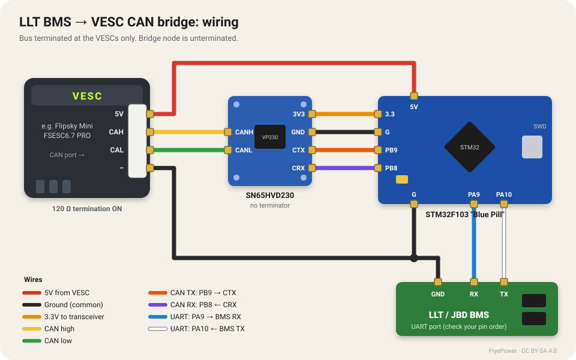
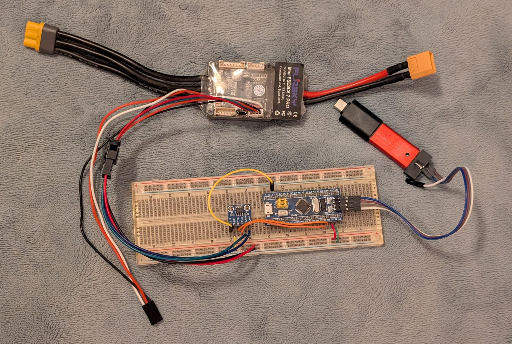

LLT BMS to VESC CAN Bridge
Use a cheap LLT/JBD smart BMS for charging and balancing, and let your VESC see every cell voltage over CAN.
What this is
A small adapter that reads data from an inexpensive LLT / JBD smart BMS over its UART port and re-sends it on the CAN bus in the same format a VESC expects from a VESC-compatible BMS.
Once the VESC can see every cell voltage, it can limit or cut motor current based on the lowest cell, not just the total pack voltage. That means a budget 20A BMS can do what it's good at, charging and balancing, while the VESC handles discharge protection. The BMS's FET output switch doesn't need to carry motor current at all.
The bridge is an STM32F103 "Blue Pill" board plus an SN65HVD230 CAN transceiver: a few dollars of parts.
Draft / work in progress. This page is published while the project is still being built. The firmware is not yet confirmed working on a VESC. Don't rely on it for protection on a bike you ride until this warning is gone.
Safety warning
If you skip the BMS's discharge FET, this bridge and the VESC are your only over-discharge protection. If the STM32 crashes, a wire comes loose, or the BMS stops answering, nothing else will stop the pack from being run flat.
- Bench-test every failure case (unplug the UART, unplug CAN, power-cycle the BMS) before riding.
- Keep a fuse and a physical disconnect on the pack.
- Lithium packs store a lot of energy. If you're not comfortable working with them, stop here.
This design is shared as-is, with no warranty. You build and use it at your own risk.
Parts
| Part | Notes |
|---|---|
| STM32F103C8 "Blue Pill" | Any genuine or clone F103C8 board |
| SN65HVD230 CAN transceiver board | 3.3V transceiver; remove its 120 Ω terminator if it has one |
| LLT / JBD smart BMS with UART port | Tested target: LLT 20A, 10S–13S |
| VESC-based controller with CAN | Prototype uses a Flipsky Mini FSESC6.7 PRO |
| ST-Link V2 programmer | For flashing the Blue Pill |
| Jumper wires / JST-PH connectors | Breadboard for testing, soldered for the bike |
Tools: soldering iron, multimeter, a PC with STM32CubeIDE (free) or STM32CubeProgrammer, and VESC Tool.
How it works
- Every 500 ms the Blue Pill asks the BMS for its basic info (pack voltage, current, capacity, temperatures, protection flags) and its cell voltages, using the LLT UART protocol at 9600 baud.
- It converts the numbers into the VESC BMS CAN message format: pack voltage and current, state of charge, min/max cell voltage, every cell voltage, temperatures and Ah/Wh.
- It sends those frames on the CAN bus at 500 kbps. Every VESC on the bus can read them.
- In VESC Tool you tell the VESC to use the CAN BMS and set the cell-voltage limits.
Notes and limitations
- Termination: a CAN bus needs exactly two 120 Ω terminators, one at each physical end. On a two-motor bike, terminate the two VESCs and leave the bridge unterminated. Many SN65HVD230 boards ship with a 120 Ω resistor fitted; check and remove it.
- Pins: the Blue Pill's CAN uses the remapped pins PB8 (RX) / PB9 (TX), because the default pins clash with USB.
- Power: the bridge runs from the VESC's 5V on its CAN connector. The Blue Pill's 3.3V regulator feeds the transceiver.
- Not reported by LLT: state of health and per-cell balancing status. The bridge sends SoH as 100% and balancing as off.
- Test mode: the firmware has a
CAN_TEST_MODEswitch that sends made-up, slowly changing BMS data, so you can check the CAN side without a BMS connected.
Step 1: Wire it up

| From | To |
|---|---|
| VESC CAN 5V | Blue Pill 5V |
| VESC CAN − (GND) | Blue Pill G, transceiver GND |
| Blue Pill 3.3 | Transceiver 3V3 |
| Blue Pill PB9 | Transceiver CTX |
| Blue Pill PB8 | Transceiver CRX |
| Transceiver CANH | VESC CAN CAH |
| Transceiver CANL | VESC CAN CAL |
| BMS UART TX | Blue Pill PA10 (RX) |
| BMS UART RX | Blue Pill PA9 (TX) |
| BMS UART GND | Blue Pill G |
On the Flipsky Mini FSESC6.7 PRO, the 4-pin CAN connector reads −, CAL, CAH, 5V. Check your own VESC's documentation; other boards differ.
BMS connector: the LLT UART connector's pin order still needs confirming for this guide. Some LLT/JBD boards have a fourth pin that carries a voltage. Measure it before connecting anything to the Blue Pill.

The breadboard prototype: Flipsky Mini FSESC6.7 PRO (top), SN65HVD230 and Blue Pill (breadboard), ST-Link (right). The BMS isn't connected in this photo.
Step 2: Flash the Blue Pill
Option A, prebuilt firmware: download the firmware below and flash it with STM32CubeProgrammer through the ST-Link (SWD). (A prebuilt file will be added once the firmware is confirmed working.)
Option B, build it yourself:
- Download the source zip below, or clone the GitHub repo.
- In STM32CubeIDE: File → Import → Existing Projects into Workspace, and choose
firmware/VESC2LLT. - In
Core/Src/main.c, comment out#define CAN_TEST_MODEto use the real BMS. Leave it in for a first CAN-only test. - Build and run with the ST-Link connected (SWDIO, SWCLK, GND). Leave the ST-Link's 3.3V wire disconnected when the VESC is powering the board.
Step 3: Set up the VESC
To be written: VESC Tool BMS settings (CAN BMS type, cell voltage limits, what happens when BMS messages stop arriving).
Step 4: Bench test
- Start in
CAN_TEST_MODEwith only the VESC connected. Open VESC Tool's BMS page; you should see the made-up values slowly sweeping. - Switch to real BMS mode and connect the BMS. Check that the cell voltages in VESC Tool match the BMS's own app.
- Unplug the UART, then the CAN wires, and confirm the VESC reacts the way you expect before you ride.
Troubleshooting
- CANH and CANL both sit at about 2.2–2.5V with almost no difference between them: the bus is idle and nothing is transmitting. Check the PB8/PB9 wiring to CRX/CTX, and that CAN started in firmware.
- Nothing on VESC Tool's BMS page: check that both ends use 500 kbps, and that CANH and CANL aren't swapped.
- Can't connect the ST-Link: hold the Blue Pill's reset button while you start the connection.
Downloads
- Source code (zip): STM32CubeIDE project, GPL-3.0
- Wiring illustration (SVG)
- GitHub repository

License
Firmware: GPL-3.0. This guide, the diagrams and photos: CC BY-SA 4.0.